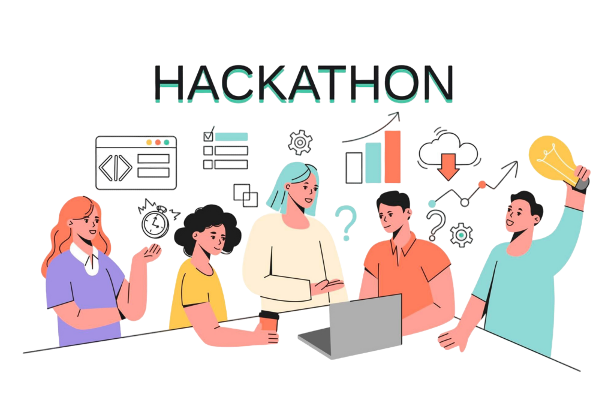

Що таке хакатон?
Хакато́н або Гакато́н (англ. hackathon, від hack — хакер та marathon — марафон) — захід, під час якого різні спеціалісти в галузі розробки програмного забезпечення інтенсивно й згуртовано разом працюють над розв'язанням якоїсь проблеми або створенням нового додатку чи сервісу. Зазвичай хакатони тривають від одного дня до тижня. Деякі хакатони призначені для освітніх або соціальних цілей, але часто завданням хакатона є створення повноцінного програмного забезпечення. Кожний хакатон фокусовано на певні області, наприклад, мови програмування, операційні системи, додатки, програмний інтерфейс (API).
Термін «хакатон» з'явився 1999 року. Його незалежно стали вживати розробники OpenBSD та Sun Microsystems. Розробники OpenBSD вперше використали цей термін для позначення зустрічі в Калгарі (Канада) 4 червня 1999 року, яка присвячувалась криптографії. На неї приїхало 10 розробників для написання програм, які б не підпадали під жорсткі експортні обмеження, що встановлені США на криптографічне програмне забезпечення. Sun Microsystems використала назву «the Hackathon» під час конференції JavaOne, яка проходила з 15 по 19 червня 1999 року. John Gage запропонував написати програму на мові програмування Java для нового Palm V, який би використовувала ІЧ порт для зв'язку з іншими користувачами Palm.
Починаючи з середини 2000-х років, хакатони стали більш поширеними і розглядалися компаніями та інвесторами як спосіб швидкої розробки нових програмних технологій або областей інвестування. Деякі відомі компанії були створені на хакатонах, наприклад GroupMe, яка з'явилася на хакатоні конференції TechCrunch Disrupt 2010; 2011-го вона була куплена компанією Skype за 85 млн доларів.
Виділяють наступні основні цілі хакатонів:
- зацікавити якомога більше людей в розробці власних рішень;
- надати можливість розробникам-початківцям і експертам поспілкуватися один з одним;
- популяризація розробки.